A Superfície · Etapa 4
Refinar a continuidade.
Espaçamento, fotografia, tipografia e uma galeria mais estável. A abertura e a versão anterior foram preservadas. As comparações mostram composição; a interação foi testada diretamente no navegador.
Percursos completos
Preferência nativa de movimento reduzido nas capturas longas; registros brutos abaixo com movimento ativo.


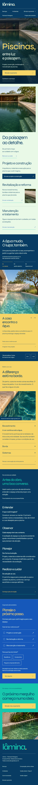
Antes e depois no mesmo viewport
desktop

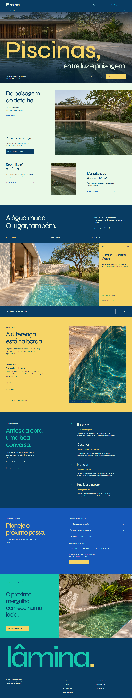

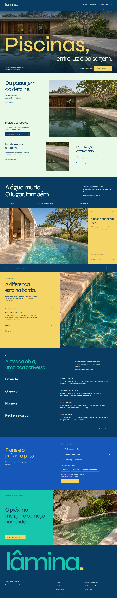
tablet

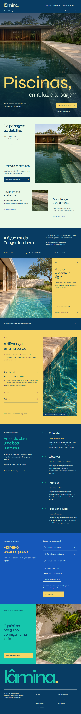

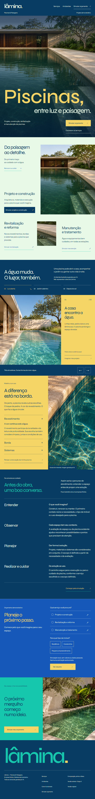
mobile

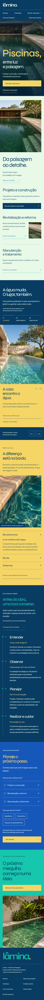

Os limites entre seções


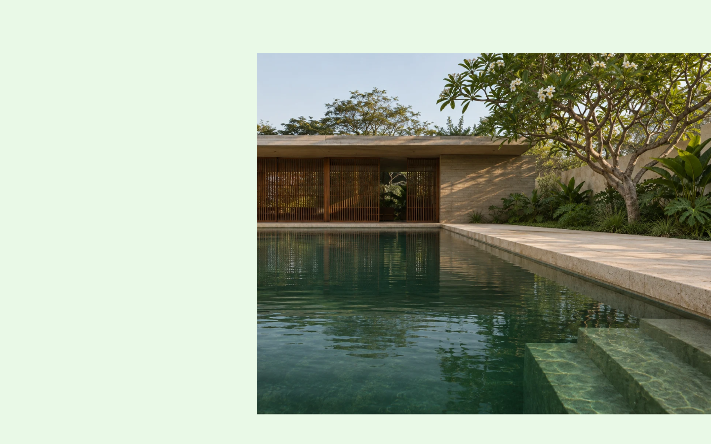

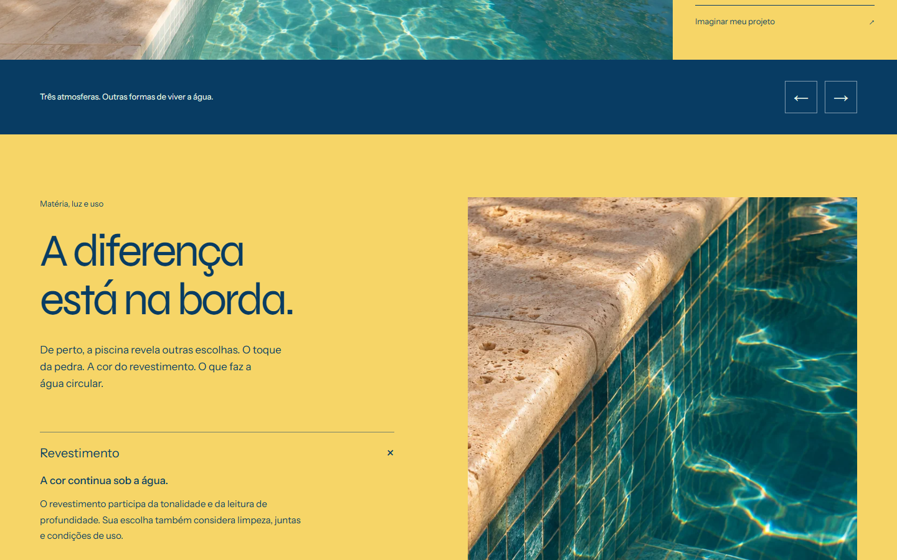

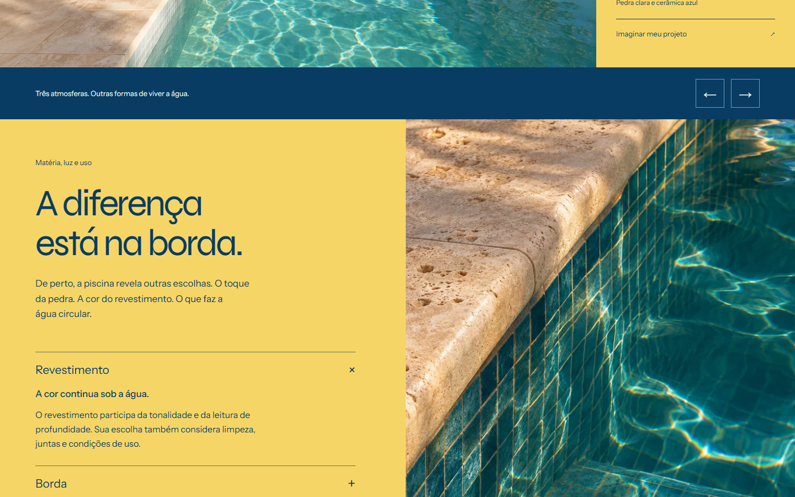

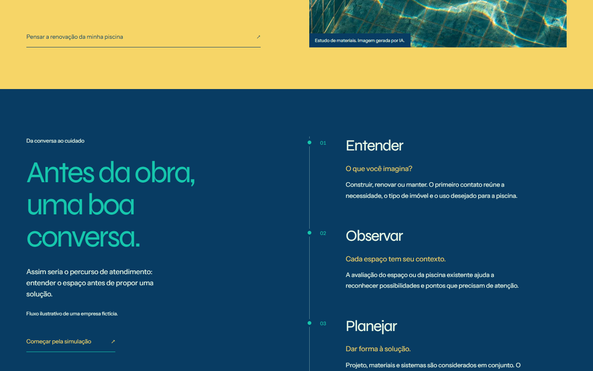

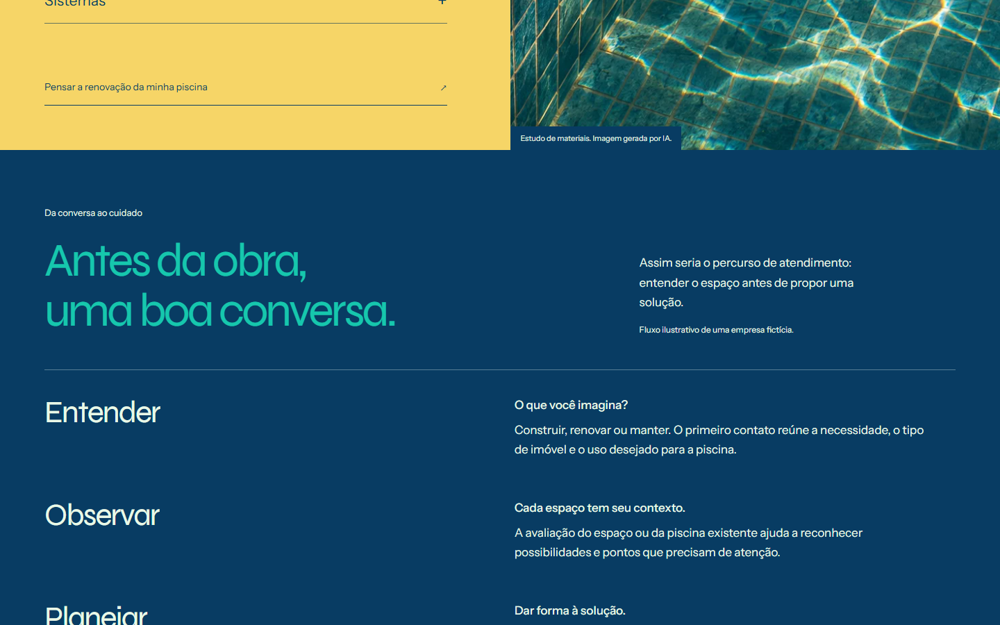

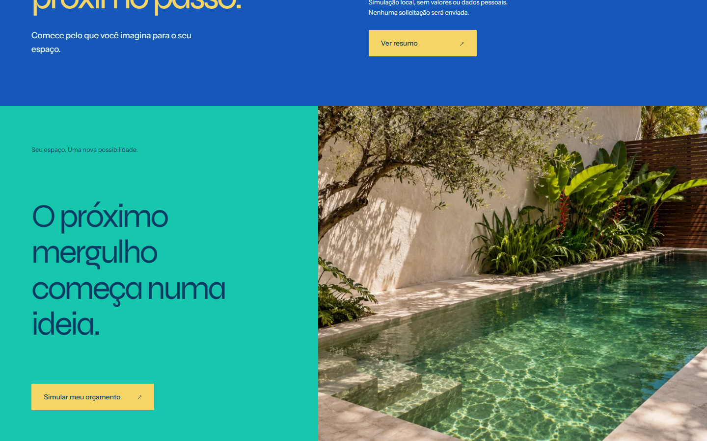

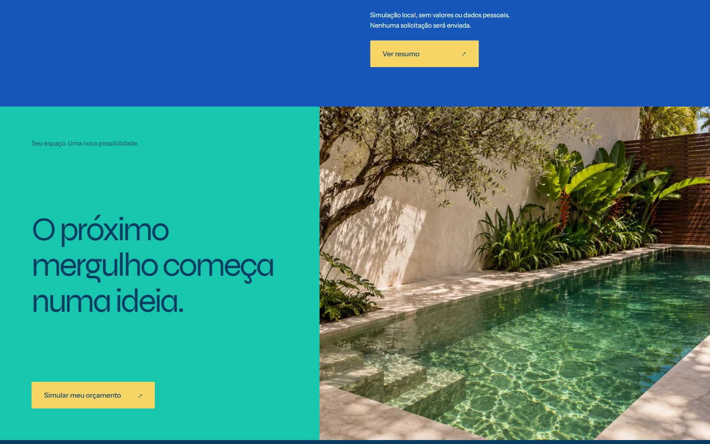
Gravações brutas
Wheel e cliques no desktop; gestos CDP e toque no mobile. Incluem preparação e carregamento do navegador, sem montagem ou transições adicionadas.
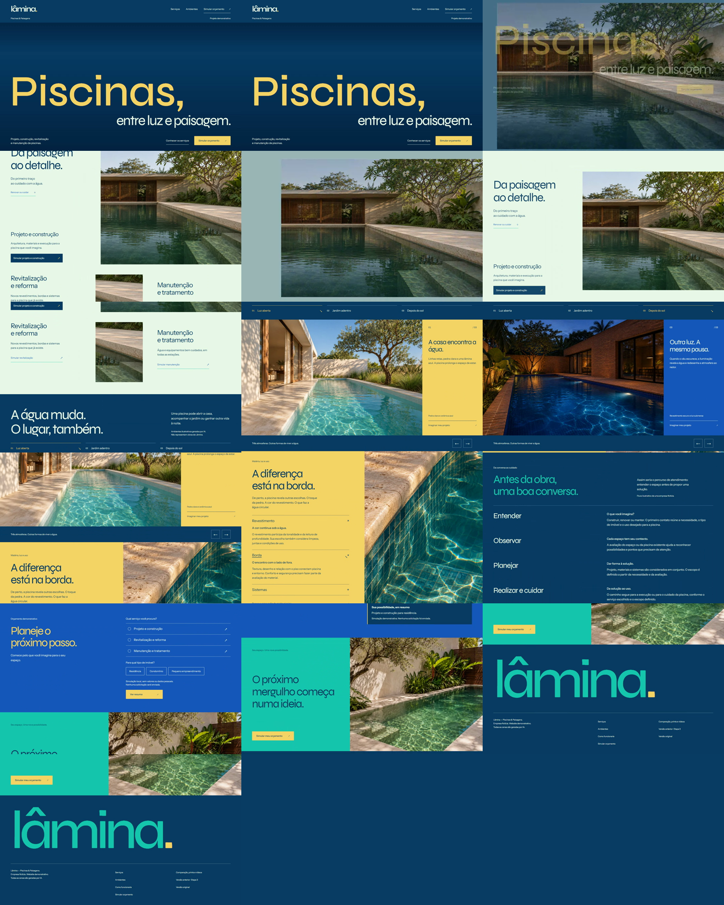
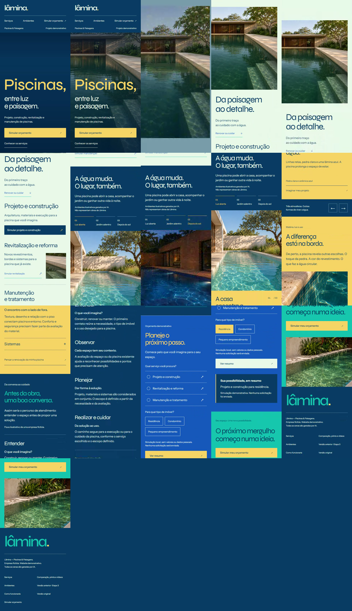
Empresa fictícia. Imagens sintéticas existentes. Sem commits, push ou deploy. A página principal aguarda avaliação do proprietário.